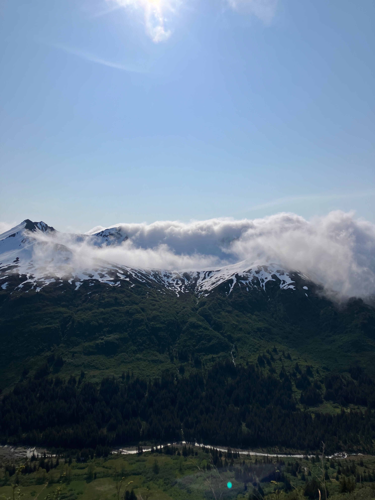
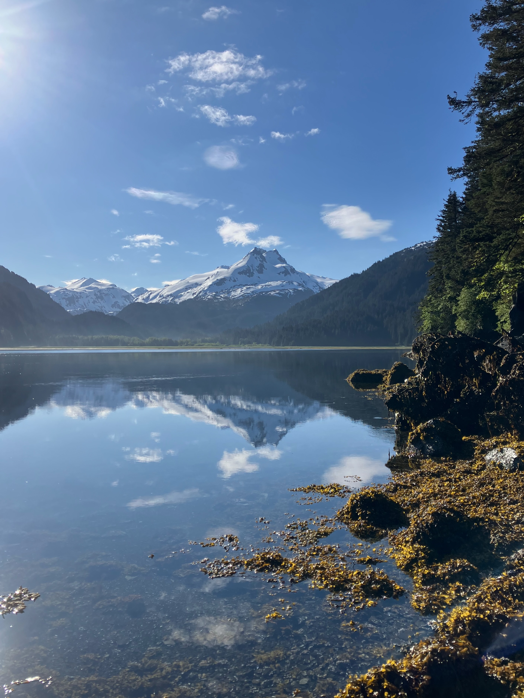
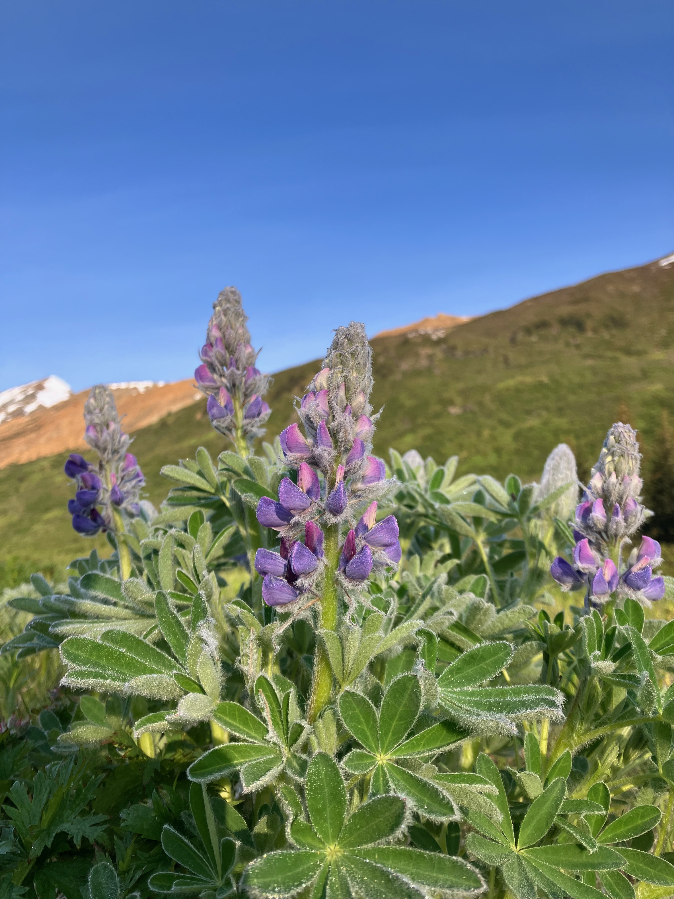
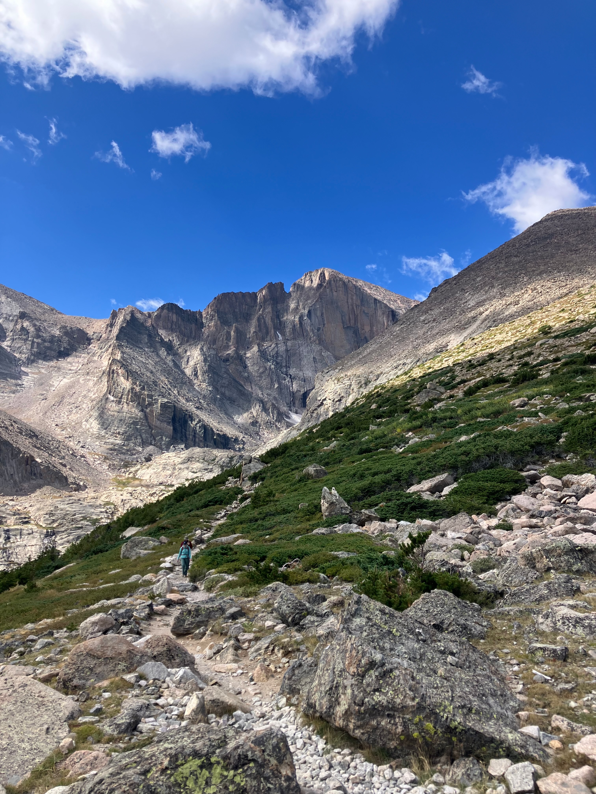
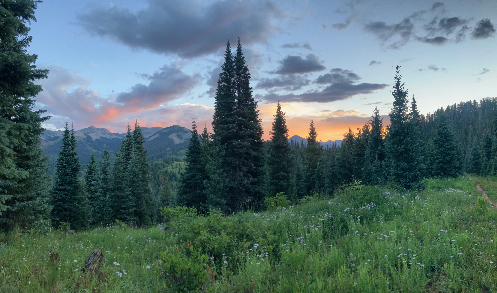

Trail Building · Wilderness
Trail projects, backcountry trips, and the landscapes that keep pulling me back — both the work of building trails and the act of being out in wilderness.
From the Colorado Front Range to coastal Alaska.




